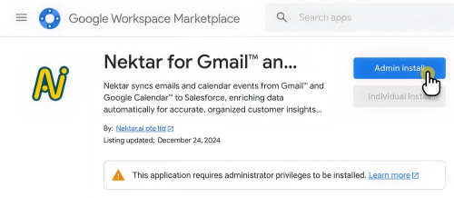
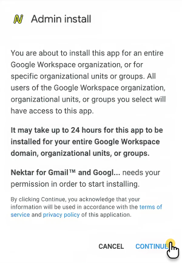
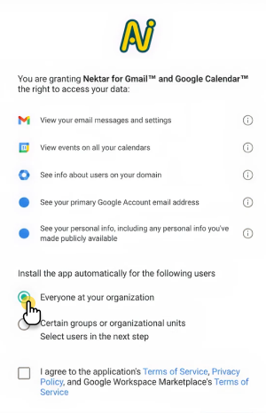

3819417ef6ba81238421d6664937f71f

Follow these simple steps to install Nektar for Gmail, Google Calendar and Google Meet from the Google Marketplace.
Important: You must either be signed in as Google admin or have permission to install and give access to app from Google Marketplace.
Step 1: Access the Marketplace
Click on the following link to visit the Nektar app page on Google Marketplace.
Step 2: Select "Admin Install"
On the app page, click the "Admin Install" button.

Step 3: Click "Continue"
A pop-up will appear to confirm the installation. Click "Continue" to proceed.

Step 4: Choose Installation Options
You will be prompted to select one of the following options:
Option 1: "Everyone at your organization"
- Select this option to grant access to all users in your organization.
- No additional steps are required.
Option 2: "Certain Groups or Organisational units"
- Select this option to limit access to specific groups or organisational units.
- Click here to see more details on how to create groups or organisational units.
- Important: For this to work, ensure that Google administrator is part of the selected group or organisational unit.
